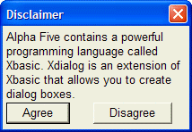

Static Text H Directive
Syntax
% H=R%
Description
The H=R directive specifies that width (character) and height (line) calculations will be performed using the currently specified font and point size, rather than the default Arial 8 point.
Example
|
format = <<%dlg% Hello World %dlg% ui_dlg_box("Simple Xdialog", format) |

See Also
Xdialog Language Directives and Operators, Static Text Control Syntax